We're happy to present you with one of the largest Makie releases we've made to date!
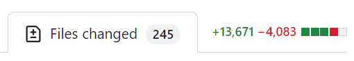
It was in the works for about a year, a year in which we've had our first Makie conference and saw the adoption of Makie among Julia users rise. One indicator for that is the citation count of our JOSS paper (thank you for acknowledging our work if it benefits you with your own!), which at the moment of writing is just shy of 100:
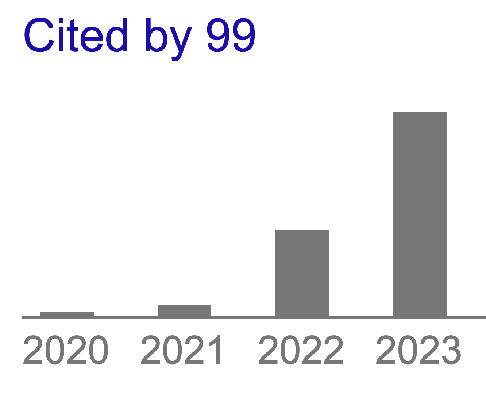
It's great to flip through all those papers and see how Makie is used in the wild!
Version 0.20 will enable users to make even better plots, as it contains many long-awaited features and fixes. So let's take a look at some of the most prominent additions and improvements.
CairoMakie has long had the ability to increase the resolution of saved images with the px_per_unit setting. However, GLMakie could only render at exactly the resolution set in a Figure or Scene. This caused several problems: Figures would look too small on high-dpi and too large on low-dpi screens. For inclusion of GLMakie figures in publications, users would have to compute the final resolution for the right dpi count manually, and then adjust all other sizes like fontsize, scatter markers, line widths, etc. to match.
Now, GLMakie supports px_per_unit which means that you can render high-resolution results with a simple save("output.png", figure, px_per_unit = 5). Interactive windows can automatically adjust their px_per_unit value to the screen's scaling factor reported by the operating system. This way, Makie windows should always be appropriately sized, with legible, sharp text.
This effort was spearheaded by Justin Willmert in a heroic and completely unexpected first-contributor effort in #2544, many thanks to him!
With this improvement come a few changes in the API and default Makie theme. The resolution keyword is deprecated and now called size, reflecting that this is not a pixel size anymore, even for GLMakie. The default figure size is now (600, 450) instead of (800, 600), with a fontsize of 14 instead of 16 device-independent pixels (10.5 instead of 12 pt). We do not have to make these sizes a compromise between high-dpi and low-dpi systems anymore, so we felt the default was too large for typical uses in documents or websites.
Here's a screenshot from a high-dpi Macbook from the previous Makie version, where you can see that, compared with other apps and system fonts, the window and fontsize used to be pretty small due to unawareness of screen scale factors, which meant that the 800x600 window ended up at a measly 400x300 logical pixels:
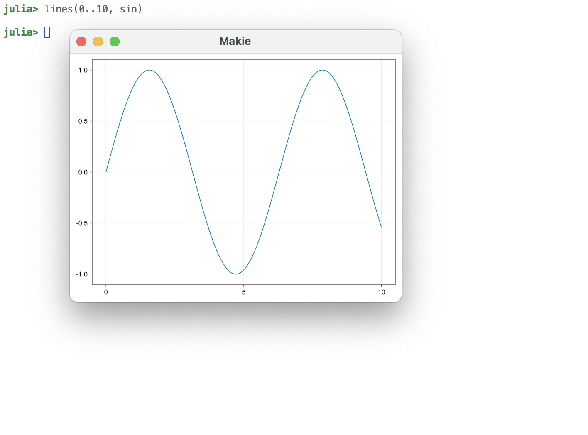
Now, the window has 600x450 logical pixels, backed by 1200x900 actual pixels, so text is sharp and much more readable.
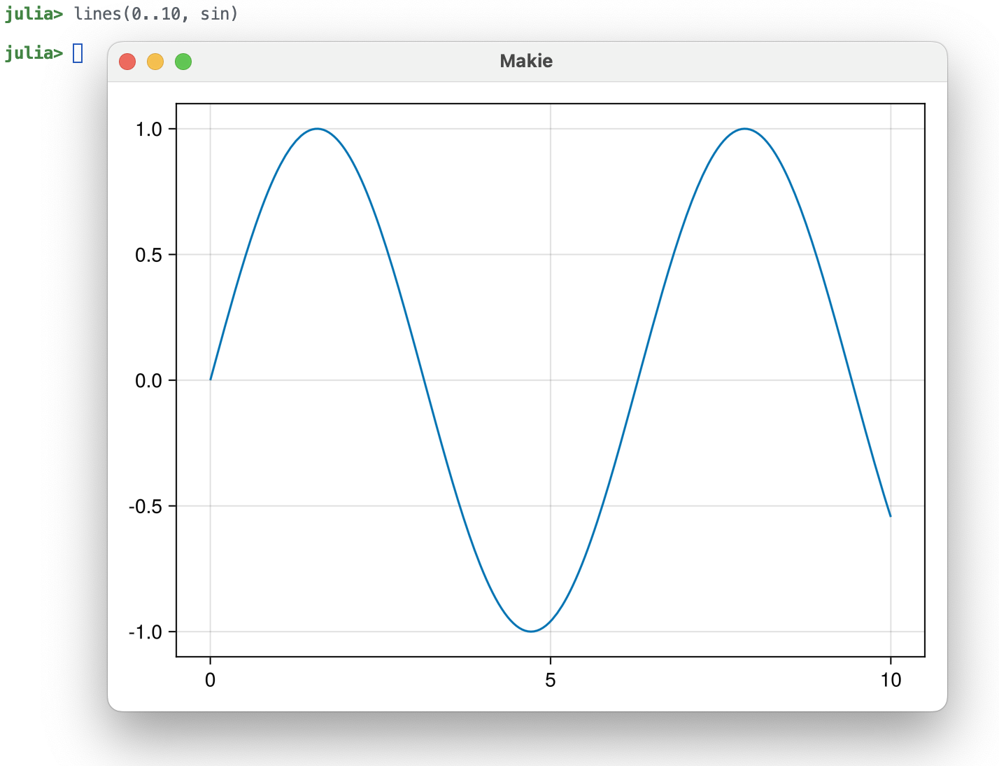
Speaking of websites, if you were using Makie on high-dpi screens with web-technology based tools like Pluto, Jupyter notebooks or VSCode, you probably noticed that plots (except for svgs) would often look blurry. Increasing resolution in GLMakie or px_per_unit in CairoMakie didn't make the images sharper, just bigger. The reason is that browsers by default display images at their resolution in CSS px units. On high-dpi screens, one px unit covers more than one screen pixel, so if you use multiple screen pixels to display one image pixel, you get a blurry result.
Now that we interpret size of a Figure in device-independent pixels like CSS, we can display png images with the text/html MIME type, annotated with the original size via the width and height HTML attributes. This way, a Figure with size = (600, 450) will display at the same size, no matter how high or low px_per_unit is set. To give a better default experience, we increased px_per_unit to 2 so that outputs in Pluto and other notebooks will look sharp no matter if they're later viewed on a regular or high-dpi screen (at the cost of increased file size).
Here's a screenshot from a Macbook running Pluto with the previous Makie v0.19. The default png output is large (800x600 CSS pixels is larger than Pluto's output area size at 700px width, so we're even seeing a slightly scaled-down version). It's not sharp because the image only contains 800x600 pixels while the screen has double the pixels to fill.
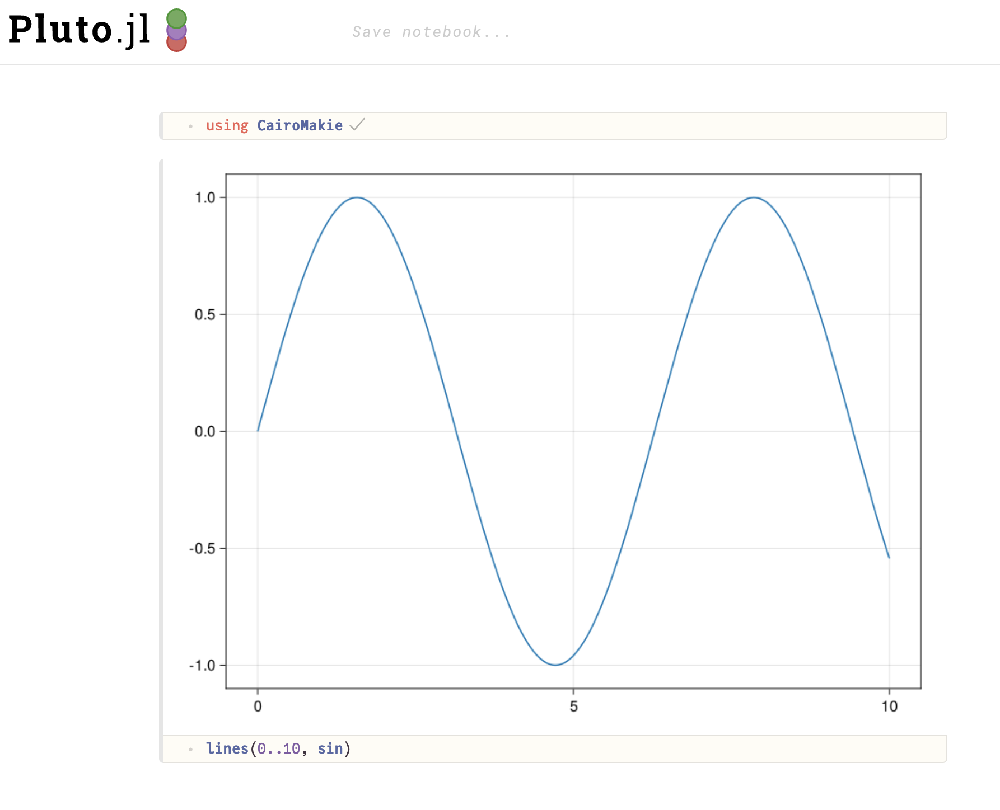
And here is Makie v0.20. The image has the correct size of 600x450 CSS pixels, slightly smaller than Pluto's output area. And it's sharp, because it contains 1200x900 real pixels.
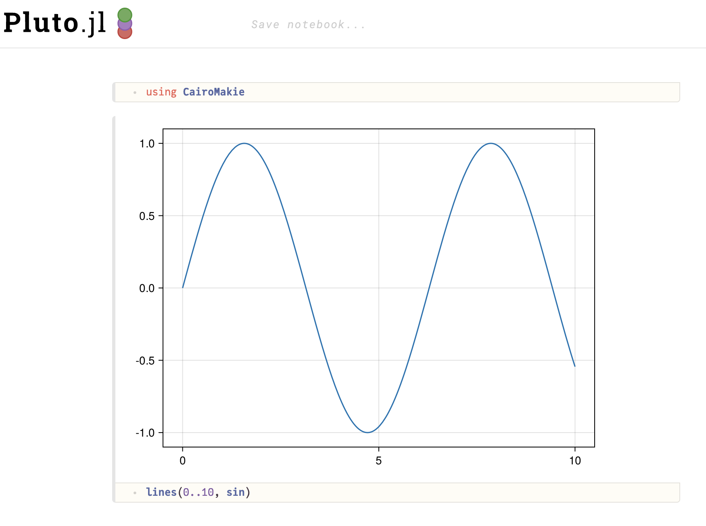
Makie has a new experimental declarative API called SpecApi. While its interface is not yet stable, we are at a point where we want to ask the community to join forces with us in testing what works and what doesn't, so we're releasing a first version in 0.20. Note that experimental means that we may change this API at any time, so you should not build code intended to have a longer shelf life on top of it, yet.
Before going into the details, here is an example of the SpecApi in use:
using GLMakie
using DelimitedFiles
using Makie.FileIO
import Makie.SpecApi as S
volcano = readdlm(Makie.assetpath("volcano.csv"), ',', Float64)
brain = load(Makie.assetpath("brain.stl"))
r = LinRange(-1, 1, 100)
cube = [(x .^ 2 + y .^ 2 + z .^ 2) for x = r, y = r, z = r]
density_plots = map(x -> S.Density(x * randn(200) .+ 3x, color=:y), 1:5)
brain_mesh = S.Mesh(brain, colormap=:Spectral, color=[tri[1][2] for tri in brain for i in 1:3])
volcano_contour = S.Contourf(volcano; colormap=:inferno)
cube_contour = S.Contour(cube, alpha=0.5)
ax_densities = S.Axis(; plots=density_plots, yautolimitmargin = (0, 0.1))
ax_volcano = S.Axis(; plots=[volcano_contour])
ax_brain = S.Axis3(; plots=[brain_mesh], protrusions = (50, 20, 10, 0))
ax_cube = S.Axis3(; plots=[cube_contour], protrusions = (50, 20, 10, 0))
spec_column_vector = S.GridLayout([ax_densities, ax_volcano, ax_brain]);
spec_matrix = S.GridLayout([ax_densities ax_volcano; ax_brain ax_cube]);
spec_row = S.GridLayout([spec_column_vector spec_matrix], colsizes = [Auto(), Auto(4)])
f, ax, pl = plot(S.GridLayout(spec_row); figure = (; fontsize = 10))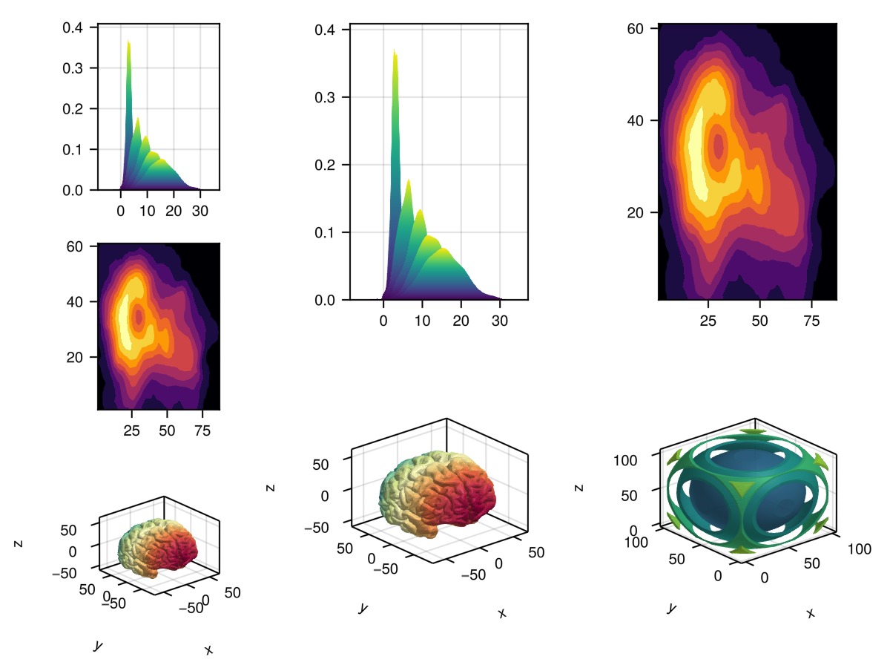
We had been thinking for quite a while about a more declarative API which can describe complex plots as nested dicts without any Observables. A major issue has been how to keep performant animations part of such an API. The SpecApi now offers this and allows Observable{FigureSpec} to create animations of whole layouts and complex plots via diffing.
There are at least three reasons why Makie can benefit from a declarative API:
AlgebraOfGraphics.jl has never supported animating Plots, because it has been too hard to create complex layouts from data observables in Makie. Since AlgebraOfGraphics is great for interactive data dashboards, this has always been a big limitation. With the new SpecApi, we will be able to rewrite AlgebraOfGraphics to be just a small generator of SpecApi objects, with much better compile times and the ability to create fully interactive and performant data dashboards.
Pluto and PlutoUI work best with a declarative Plotting API, and it has not been working well with Makie's observable approach. With the SpecApi this will change and should make the usage of Makie in Pluto much more enjoyable. Note, that the deeper integration with Pluto will still need some help from Pluto's side.
Nested Dicts will work well for package independent serialization of plots. We could think of serializing complete complex figures to JSON and share them like that. Or we could update figures from within Javascript, making it easier to create animations in plots exported to HTML.
The above JSON export isn't implemented yet, but with this update we're getting a step closer to it.
To make it easier to work with the SpecApi, we decided not to use Dicts but very lightweight structs, which allow us to mirror the default Makie API:
import Makie.SpecApi as S # For convenience import it as a shorter name
S.Scatter(1:4) # create a single PlotSpec object
# Create a complete figure
spec = S.GridLayout(
S.Axis(; plots=[
S.Scatter(1:4)
])
)
spec_observable = Observable(spec)
f = plot(spec_observable) # Plot the layout into a figure
# Efficiently update the complete figure with a new FigureSpec
spec_observable[] = S.GridLayout(S.Axis(; title="lines", plots=[S.Lines(1:4)]))
f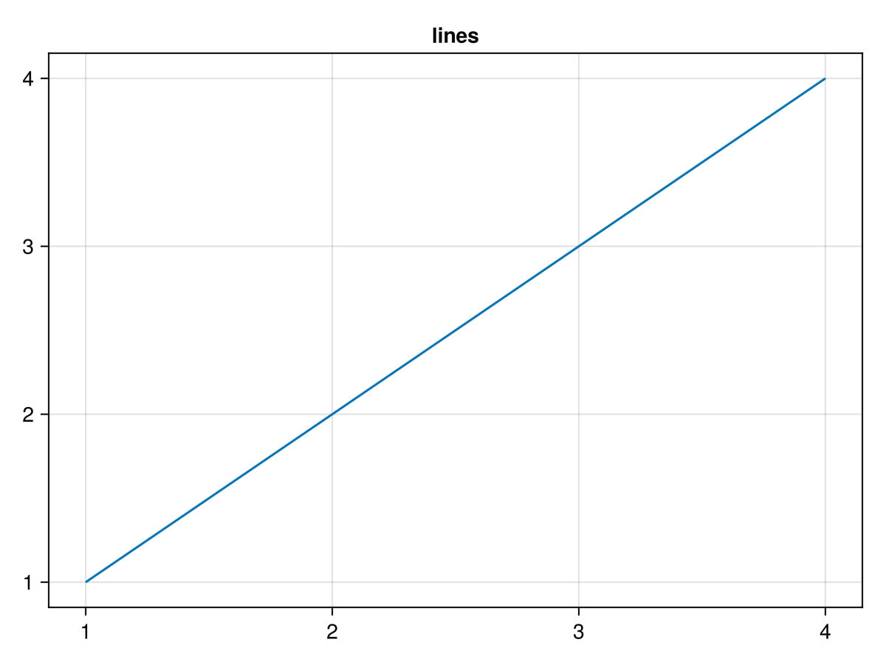
If only an attribute like a color changes from red to green, Makie will only update that color efficiently. Otherwise, plots and blocks will be deleted and re-created, which is more costly. In general, the SpecApi will always be slower for animations than using pure Observables, since we will always pay the cost of finding what has changed (the diffing), but it should be fast enough for lots of use cases.
convert_argumentsYou can overload convert_arguments and return an array of PlotSpecs or a GridLayoutSpec. The main difference between those is, that returning an array of PlotSpecs can be plotted like any recipe into axes etc, while overloads returning a whole GridLayoutSpec can only be plotted to whole layout position (e.g. figure[1, 1]).
import Makie.SpecApi as S
struct PlotGrid
nplots::Tuple{Int,Int}
end
Makie.used_attributes(::PlotGrid) = (:color,)
function Makie.convert_arguments(::Type{Plot{plot}}, obj::PlotGrid; color=:black)
axes = [
S.Axis(plots=[S.Lines(cumsum(randn(1000)); color=color)])
for i in 1:obj.nplots[1],
j in 1:obj.nplots[2]
]
return S.GridLayout(axes)
end
f = Figure()
plot(f[1, 1], PlotGrid((1, 1)); color=Cycled(1))
plot(f[1, 2], PlotGrid((2, 2)); color=Cycled(2))
f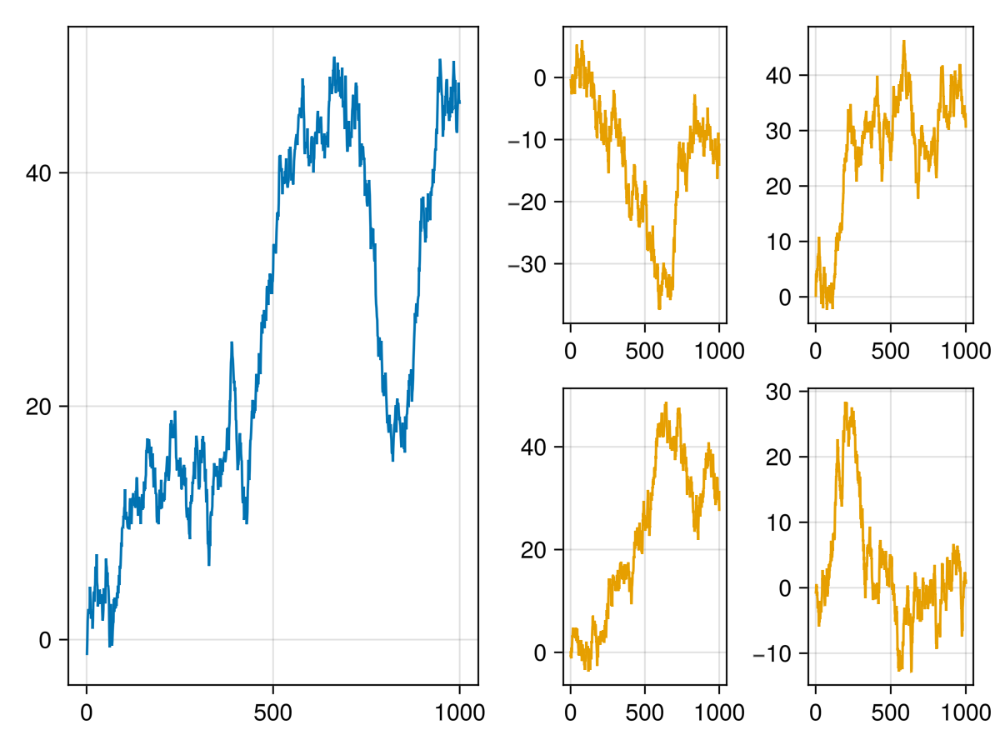
You can find more examples in the docs. Note that especially the convert_argument integration is experimental and might be moved into another function and work quite differently in the future. Also, you will likely run into some bugs, especially for more complex layouts.
The PR to introduce the SpecApi had to fix quite a few internals to make this work:
Fixes multiple memory leaks for delete!
Fixes large performance bugs in plot creation. See e.g. #3307, which was the worst offender.
Refactors plot creation API, to make things like convert_arguments(...)::FigureSpec easier to integrate and removes double convert_arguments from previous implementation. This will also make Unit support for Axes & Recipes, a.k.a axis converts #3226 easier.
Moves cycler from Axis to Scene, so that Recipes and PlotSpec work with cycling, and cycling is applied more consistently.
Moves update tracking for the GLMakie on_demand_renderloop to conversion pipeline, so that less observables for tracking are created (more than halfs the size of objects created for each plot).
This release includes two fixes for surface plots. The first deals with NaN sections in the surface data which previously led to artifacts and lighting bugs across CairoMakie, GLMakie and WGLMakie. They should now consistently be excluded across all backends without lighting issues.
rs = range(-1, 1, length=100)
xs = cospi.(rs)
ys = rs
zs = [sinpi(x) for x in rs, y in rs]
zs[52:68, 60:90] .= NaN
fig = Figure()
ax = LScene(fig[1, 1], show_axis = false)
surface!(ax, xs, ys, zs, backlight = 1)
fig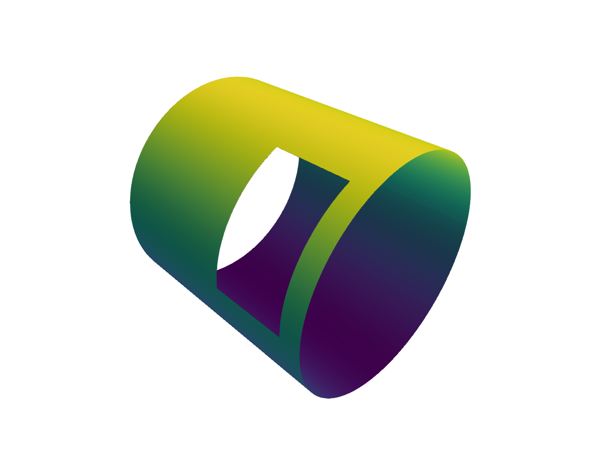
Improving NaN-related behavior also surfaced a rendering bug which has also been fixed now. Specifically, the vertex positions were placed tightly against the edges like for image while colors were centered between those vertices like in heatmap. This resulted in colors at the edge of a surface being constant. The fix is most noticeable with very low-resolution surfaces, where the distances between vertices are large. The difference is almost imperceptible for higher-resolution surfaces, which is why the problem had gone unnoticed for a while.
data = [
1 2 3;
2 2 2;
3 2 1
]
fig = Figure(size = (800, 400))
# emulate old behaviour
ax = Axis(fig[1, 1], title = "old")
emulated = [
1.0 1.0 1.5 2.0 2.5 3.0 3.0;
1.0 1.0 1.5 2.0 2.5 3.0 3.0;
1.5 1.5 1.75 2.0 2.25 2.5 2.5;
2.0 2.0 2.0 2.0 2.0 2.0 2.0;
2.5 2.5 2.25 2.0 1.75 1.5 1.5;
3.0 3.0 2.5 2.0 1.5 1.0 1.0;
3.0 3.0 2.5 2.0 1.5 1.0 1.0;
]
surface!(ax, 1..3, 1..3, emulated, shading = NoShading, colormap = :buda)
scatter!(
ax, [Point3f(x/3, y/3, 4) for x in (4,6,8) for y in (4,6,8)], color = :transparent,
strokewidth = 1, strokecolor = :black, markersize = 20)
xlims!(ax, 1, 3)
ylims!(ax, 1, 3)
ax = Axis(fig[1, 2], title = "new")
surface!(ax, data, shading = NoShading, colormap = :buda)
scatter!(
ax, [Point3f(x, y, 4) for x in 1:3 for y in 1:3], color = :transparent,
strokewidth = 1, strokecolor = :black, markersize = 20)
xlims!(ax, 1, 3)
ylims!(ax, 1, 3)
fig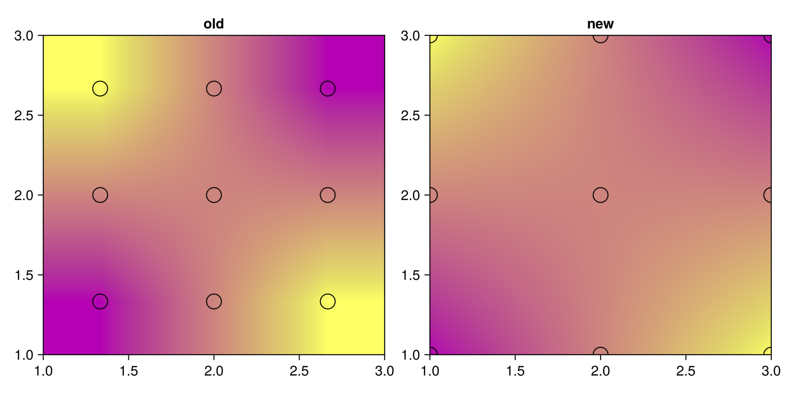
We have replaced the SurfaceLike trait and its children ContinousSurface and DiscreteSurface with a few new traits. These traits include:
CellGrid <: GridBased for plots like heatmap, replacing DiscreteSurface. It interprets (N, M) input coordinates as centers of cells and outputs (N+1, M+1) coordinates marking the corners of those cells.
VertexGrid <: GridBased for plots such as surface and contour. This replaces ContinuousSurface with the small change that generated x and y values now start at 1 rather than 0. This moves vertices to integer values and makes the respective plots compatible with heatmap
ImageLike for image plots. This conversion trait assumes that the plot is drawn on a regular rectangle, outputting two intervals xmin..xmax and ymin..ymax. With no x or y values passed this assumes the 0 as the starting value like ContinuousSurface did.
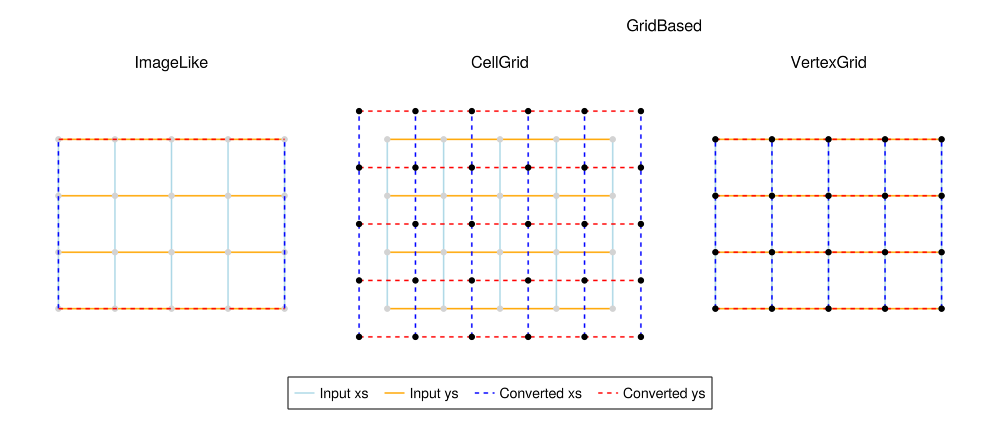
With this update we have merged a number of changes and additions to Camera3D, the default camera for 3D Scenes and LScenes.
Zooming has been reverted from an fov based zoom to a translation of eyeposition. This removes the change in "perspectiveness" when zooming.
We added a new interaction which allows you to focus on a geometry by clicking on it with the left alt key pressed.
To avoid previous issues with excessive data clipping after zooming, we now have different clipping modes. The default clipping_mode = :bbox_relative scales near and far to be just outside the scenes bounding box while also keeping near in front of the camera. For this to work you may need to call center!(scene) or update_cam!(scene[, cam], bbox[, center = true]) explicitly in some cases. Other modes include :view_relative which scales near and far by norm(eyeposition - lookat) and :static which directly passes these values on.
Translation speed now scales with the zoom level and fov to feel more consistent.
We now take the fov into consideration when centering the camera.
We adjusted some of the default key bindings to be more accessible/consistent. These include eyeposition-based zooming changing from page up/down to b/n, and the camera reset changing from the home button to control + left mouse button.
We added update_cam!(scene[, cam], azimuth, elevation[, radius = current, center = lookat]) which adjusts the camera position according to the given angles.
We have reworked lighting in GLMakie, adding more light types and allowing for multiple light sources at once, and we have adjusted the default setup across all backends. Furthermore we have made some general improvements to the consistency of lighting between plot types and backends.
Before this release, the default light setup included an AmbientLight which sets a base brightness for the scene and a PointLight which is kept at the camera position. We have changed this to be an AmbientLight with a DirectionalLight. A DirectionalLight works like the sun whose rays are effectively parallel when they arrive on earth. This makes adjusting lighting easier because illumination is the same for all similarly-oriented surfaces in the scene, no matter where they are placed. Before, the default point light was always placed exactly at camera position, which lights everything that the camera can see. Photographers will know that placing a light at camera position removes shadows and therefore depth cues, which is not desirable when we want to assess the three-dimensionality of objects. Our new default directional light now shines down at an angle relative to the camera, which generally makes it easier to see curvature of objects.
We have also adjusted the default values of diffuse and specular that a 3D plot carries. They changed from 0.4 -> 1.0 and 0.2 -> 0.4 respectively, with light intensities (given through the light color) going down to compensate. This overall makes plots a bit less shiny and cleans up the overexposure you may sometimes see:
using Makie.FileIO
fig = Figure(backgroundcolor = :black, size = (800, 400))
Label(fig[1, 1], "Old defaults", fontsize = 16, tellwidth = false, color = :white)
Label(fig[1, 2], "New defaults", fontsize = 16, tellwidth = false, color = :white)
# Emulate old lighting (does not include changes to backlight)
lights = [
AmbientLight(RGBf(0.55, 0.55, 0.55)),
PointLight(RGBf(1, 1, 1), Point3f(3, 3, 3))
]
ax1 = LScene(fig[2, 1], show_axis = false, scenekw = (lights = lights, ))
meshscatter!(
ax1, [Point3f(0, 0, 0)], color = :white,
diffuse = 0.4, specular = 0.2,
backlight = 1, fxaa = true
)
# new defaults
ax2 = LScene(fig[2, 2], show_axis = false)
meshscatter!(
ax2, [Point3f(0, 0, 0)], color = :white,
backlight = 1, fxaa = true
)
fig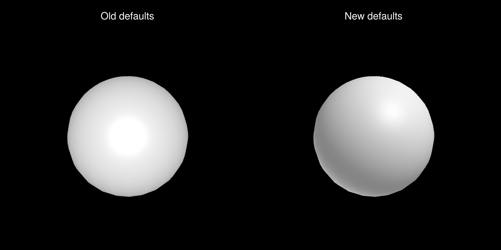
rs = range(-1, 1, length=100)
xs = cospi.(rs)
ys = rs
zs = [(y + 0.5) * sinpi(x) for x in rs, y in rs]
fig = Figure(backgroundcolor = :black, size = (800, 400))
Label(fig[1, 1], "Old defaults", fontsize = 16, tellwidth = false, color = :white)
Label(fig[1, 2], "New defaults", fontsize = 16, tellwidth = false, color = :white)
# Emulate old lighting (does not include changes to backlight)
lights = [
AmbientLight(RGBf(0.55, 0.55, 0.55)),
PointLight(RGBf(1, 1, 1), Point3f(3, 3, 3))
]
ax1 = LScene(fig[2, 1], show_axis = false, scenekw = (lights = lights, ))
surface!(
ax1, xs, ys, zs, colormap = [:white],
diffuse = 0.4, specular = 0.2,
backlight = 1, fxaa = true
)
# new defaults
ax2 = LScene(fig[2, 2], show_axis = false)
surface!(
ax2, xs, ys, zs, colormap = [:white],
backlight = 1, fxaa = true
)
fig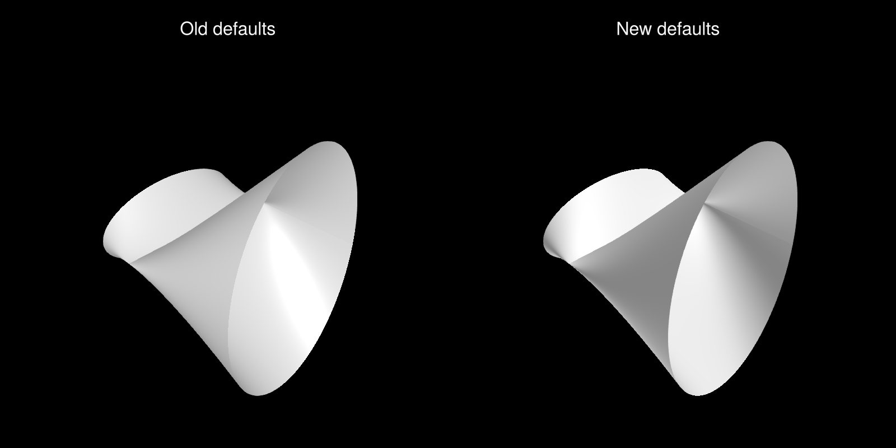
using Makie.FileIO
brain = load(Makie.assetpath("brain.stl"))
fig = Figure(backgroundcolor = :black, size = (800, 400))
Label(fig[1, 1], "Old defaults", fontsize = 16, tellwidth = false, color = :white)
Label(fig[1, 2], "New defaults", fontsize = 16, tellwidth = false, color = :white)
# Emulate old lighting (does not include changes to backlight)
lights = [
AmbientLight(RGBf(0.55, 0.55, 0.55)),
PointLight(RGBf(1, 1, 1), Point3f(3, 3, 3))
]
ax1 = LScene(fig[2, 1], show_axis = false, scenekw = (lights = lights, ))
mesh!(
ax1, brain, color = :white,
diffuse = 0.4, specular = 0.2,
backlight = 1, fxaa = true
)
# new defaults
ax2 = LScene(fig[2, 2], show_axis = false)
mesh!(
ax2, brain, color = :white,
backlight = 1, fxaa = true
)
fig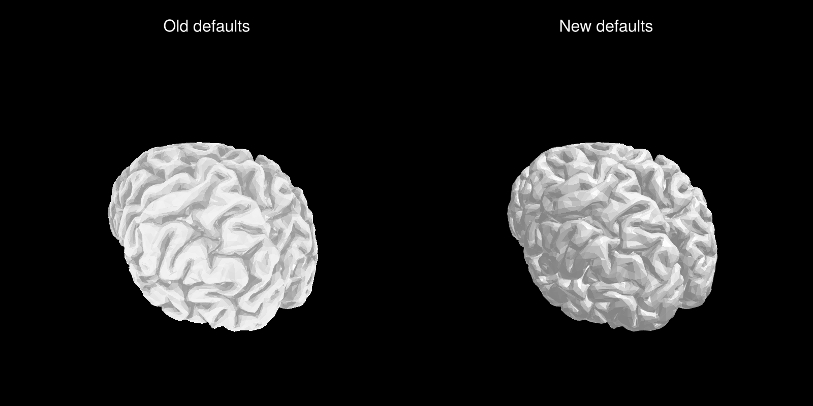
And finally we have slightly reworked and cleaned up the backlight attribute, which allows you to light the backside of a plot with a given weight. It now affects the normals of an object rather than the light direction, which means that specular reflections now work with it. We have also added an attribute conversion so you can now pass any number, not just a Float32.
For GLMakie specifically we have added the option to use multiple lights as well as a number of new light types. One of those is already mentioned above - DirectionalLight. The full list of available light types is now:
AmbientLight(color) which sets a constant base light level (all backends)
DirectionalLight(color, direction) which casts parallel light rays in the given direction (all backends)
PointLight(color, position[, attenuation]) which casts light originating from the given position with an optional attenuation (distance decay of light intensity). (GLMakie + RPRMakie)
SpotLight(color, position, direction, angles) which casts light in a cone shape (GLMakie + RPRMakie)
RectLight(color, rect, direction) which casts (parallel) light rays through a rectangle (e.g a window, GLMakie)
EnvironmentLight(intensity, image) which sets an image representing the environment for reflections (i.e. a skybox, RPRMakie)
To use multiple lights in GLMakie one simply needs to add multiple lights to the lights vector in a Scene. If this is done before plotting, the shading attribute will automatically be set to MultiLightShading which enables multiple lights. (Note that shading cannot be changed dynamically. It needs to be set when calling plot!(...).) Once enabled you can add and remove lights, as well as change light attributes like color, position, etc by adjusting the lights in ax.scene.lights.
Here's how different a simple white meshscatter can look if you add a couple colored lights:
using Random, Statistics
fig = Figure(backgroundcolor = :black)
# Create lights vector with different light types
lights = [
AmbientLight(RGBf(0.02, 0.05, 0.25)),
DirectionalLight(RGBf(0.7, 0.1, 0.05), Vec3f(0, -1, -2)),
PointLight(RGBf(0.6, 0.6, 0.6), Point3f(0, 2, 10), 100.0)
]
for custom_lights in [false, true]
Random.seed!(123)
Label(fig[1, custom_lights + 1], "$(custom_lights ? "Custom" : "Default") lights", tellwidth = false, color = :white, font = :bold)
# Create LScene with the lights defined above
ax = LScene(fig[2, custom_lights + 1], show_axis = false, scenekw = custom_lights ? (lights = lights,) : (;))
# Prepare some data with a kernel density estimate
data = [randn(30, 2); randn(30, 2) .+ [3 -5]; randn(30, 2) .+ [7 3]]
k = Makie.KernelDensity.kde(data, npoints = (30, 30))
points = vec(Point3f.(k.x, k.y', 0))
meshscatter!(
ax, points,
marker = Rect3f((0, 0, 0), (1, 1, 1)),
color = :white, markersize = vec(Vec3f.(0.5 * k.x.step.hi, 0.5 * k.y.step.hi, 10 .* k.density ./ maximum(k.density))))
# set camera position
update_cam!(ax.scene, Vec3f(17, 12, 18), Vec3f(mean(k.x), mean(k.y), 0))
end
fig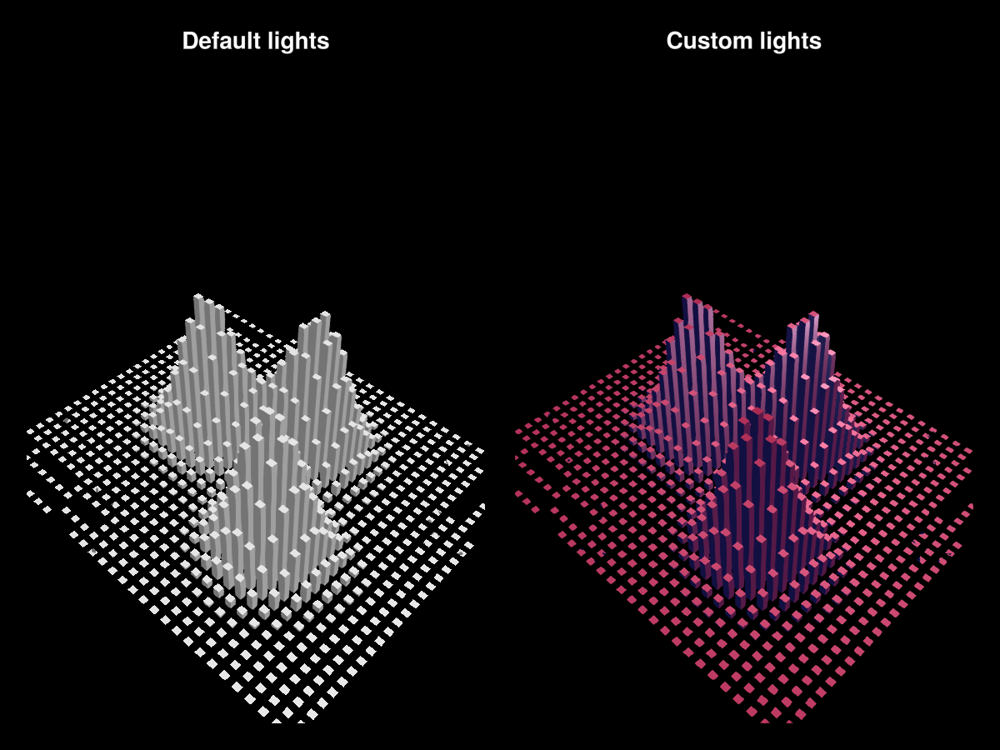
And here's an example of all light types in one figure:
fig = Figure(backgroundcolor = :black)
# RectLights implement transformations to be a bit easier to handle
rl = RectLight(RGBf(0.2, 0.8, 0.2), Rect2f(-1, -1, 1, 1))
rotate!(rl, Vec3f(1, 0, 0), -pi/4)
translate!(rl, Vec3f(0, 2, 1))
# Create lights vector with different light types
lights = [
# dark blue base color
AmbientLight(RGBf(0.05, 0.1, 0.3)),
# red-ish light coming from top right
DirectionalLight(RGBf(0.3, 0.1, 0.05), Vec3f(0, -1, -1)),
# red sport light
SpotLight(RGBf(0.8, 0.2, 0.2), Point3f(2, 0, 1), Vec3f(-1, 0, -1), [0.5, 0.7]),
# green rectangular light
rl,
# white point light without attenuation
PointLight(RGBf(0.6, 0.6, 0.6), Point3f(-2, -2, 1))
]
# Create LScene with the lights defined above
ax = LScene(fig[1, 1], show_axis = false, scenekw = (lights = lights,))
# Add some more lights after Scene initialization
# For an Axis3 you can do this instead of passing `lights`
push!(
ax.scene.lights,
# cyan point light with attenuation (larger range)
PointLight(RGBf(0.0, 0.8, 0.8), Point3f( 0, -3, 1), 10.0),
# magenta point light with attenuation (smaller range)
PointLight(RGBf(0.8, 0.0, 0.8), Point3f(-3, 0, 1), 3.0)
)
# Create some plots to be lit
mesh!(ax, Rect3f(Point3f(-6, -6, -0.5), Vec3f(10, 10, 1)), color = :white)
meshscatter!(
ax, Point3f[(x, y, 0) for x in -5:2:3 for y in -5:2:3],
color = :white, markersize = 1)
# set camera position
update_cam!(ax.scene, Vec3f(4, 4, 5), Vec3f(-1, -1, 0))
fig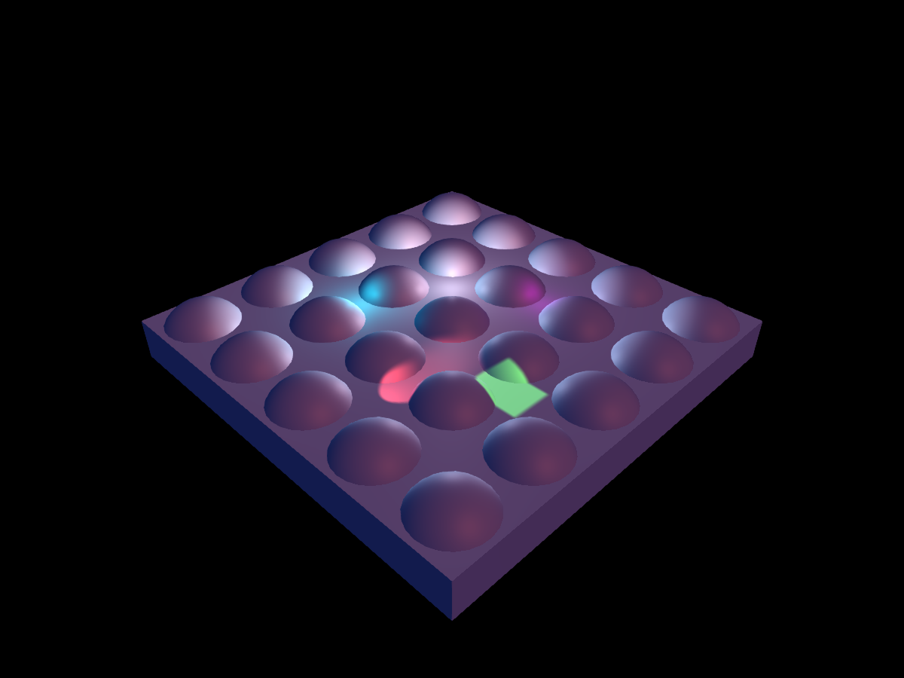
We refactored the Combined plot object (which got stuck with a bad name for historical reasons) and finally renamed it to just Plot. It's now more self contained and one can now create a plot without a scene with the constructor Plot{plotfunc}(args::Tuple, attributes::Dict), and only later gets the plot connected to a scene. One can also do lift(func, plotobject, args...), on(func, plotobject, observable), onany(func, plotobject, args...) to bind the observable to the lifecycle of a plot. If the plots gets deleted, any observable connection will get cleaned up this way without creating memory leaks. We plan to further build uppon this API, to also add event handling (e.g. onmouse(callback, plotobject)), in a way that can be better cleaned up and connected to different scenes.
This allows a few things:
We called convert_arguments multiple times in different places in the plotting pipeline, since we didn't have the plot object yet. Now, it gets only called one time.
We don't need to create a temporary scene anymore, just to create a plot. This was done in the pipeline to create a first plot to decide which axis to use, since boundingbox is only defined on complete plot objects.
In theory, one can now move plots between scenes/axes more easily, but we haven't implemented an API for this yet.
Better compile times, since the keyword arugments are put into an untyped Dict inside the plot object immediately.
Ironically, this refactor removed the reliance on the first plots boundingbox for deciding which axis to use. Instead we now use this overloadable interface:
Makie.args_preferred_axis([PlotType], plot_arguments...) = PreferredAxisType
Makie.preferred_axis_type(plot::PlotType) = PreferredAxisType
# Which is used like this:
# Always use 3D axis for 3d points
Makie.args_preferred_axis(::AbstractVector{<:Point3}) = LScene
# Always use LScene for Volume plots
preferred_axis_type(::Volume) = LSceneIf no overload is found, we fallback to Axis. We also introduced AbstractAxis, which Blocks can inherit from to get all the basic functionality most axes will need (e.g. plotting into them). The default behaviour is defined with these fallbacks (which can be overloaded of course):
# falls back to resetting limits
update_state_before_display!(ax::AbstractAxis) = reset_limits!(ax)
Makie.can_be_current_axis(ax::AbstractAxis) = true
function plot!(ax::AbstractAxis, plot::AbstractPlot)
plot!(ax.scene, plot)
needs_tight_limits(plot) && tightlimits!(ax)
if is_open_or_any_parent(ax.scene)
reset_limits!(ax)
end
return plot
end
figurelike_return(ax::AbstractAxis, plot::AbstractPlot) = AxisPlot(ax, plot)All these changes led to significant performance improvements while simplifying the plotting pipeline:
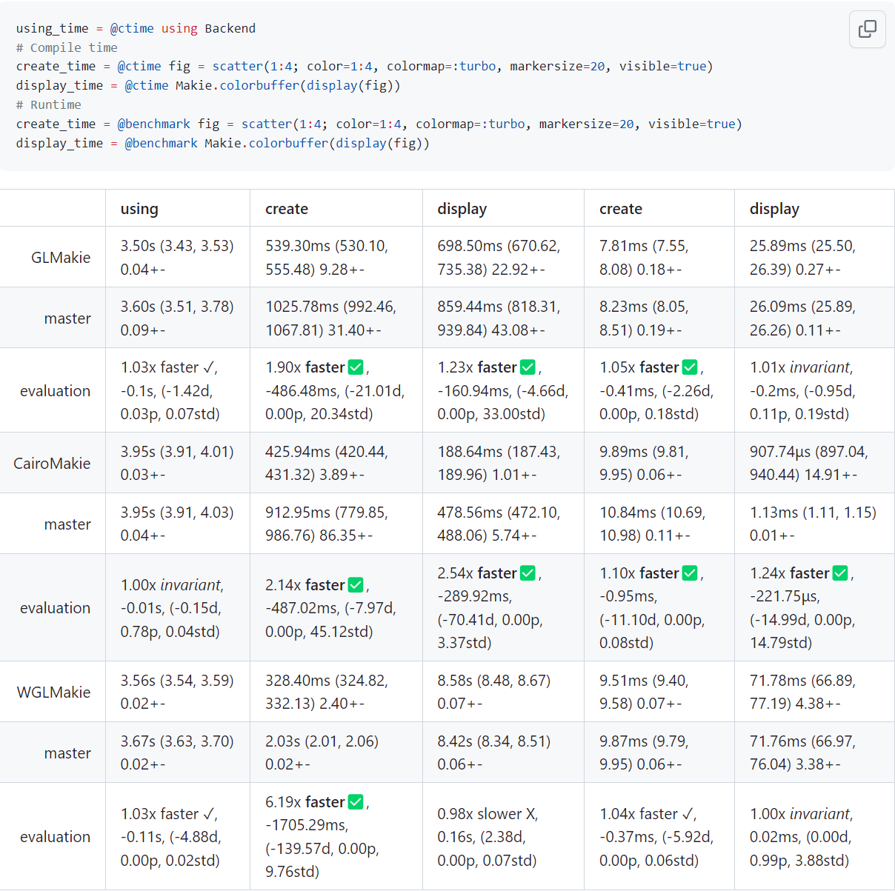
Faster line rendering with less bugs #3062.
Improved compile times and display times.
Memory leak fixes in JSServe and WGLMakie.
Uses Makie's 3D camera if connected to Julia, switches to ThreeJS orbit camera for e.g. static export, which now supports panning and touch controls.
Deprecated the resolution keyword in favor of size to reflect that this value is not a pixel resolution anymore #3343.
Deprecated pixelarea(scene) and scene.px_area in favor of viewport
Deprecated shading::Bool in favor of shading::ShadingAlgorithm
Deprecated SurfaceLike traits (ContinuousSurface and DiscreteSurface) in favor of CellBasedGrid, VertexBasedGrid and ImageLike
If you haven't run Makie with julia --depwarn=true previously, you may run into errors with these deprecations which are now no longer graceful:
@deprecate GLMakie.set_window_config!(; screen_config...) GLMakie.activate!(; screen_config...)
@deprecate ispressed(scene, ::Nothing) ispressed(parent, true)
@deprecate flatten_plots(scenelike) collect_atomic_plots(scenelike)
@deprecate mouse_selection pick
@deprecate_binding GLVisualize GLMakie
@deprecate_binding MakieLayout Makie
@deprecate_binding _current_figure CURRENT_FIGURE
@deprecate_binding default_palettes DEFAULT_PALETTES
@deprecate_binding minimal_default MAKIE_DEFAULT_THEME
@deprecate_binding _default_font DEFAULT_FONT
@deprecate_binding _alternative_fonts ALTERNATIVE_FONTS
Changed default of transform_marker to false for text
Changed default diffuse to 1, specular = 0.4 and lowered light intensity to match
Changed backlight to reverse normals rather than the light direction.
Changed default light position/direction and type
Changed surface rendering to align colors with vertices
Changed Camera3D (cam3d!, cam3d_cad!) back to eyeposition-based zooming